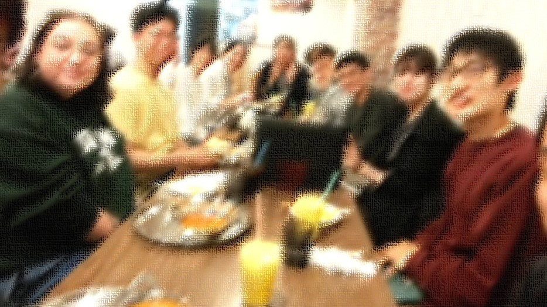

京都大学リサイクル市では、使用年数などを理由にリサイクルショップに引き取ってもらえないけれど、まだまだ十分に使える物品をもう一度活かすこと、を目的に活動を行っています。
そのため、リサイクル市に物品提供する前に、
リサイクルショップへの売却や、友人・後輩への譲渡、あるいはネットフリマやオークションサイトなどの利用
など、なるべく提供物品の数を減らす工夫をしてくださいますよう、お願いします。
また、卒業生の皆さんに提供していただいた物品は、新入生や在校生が譲り受け、大切に使い続けていくための物ですので、
新たな引き取り手のかたが気持ちよく引き取れる物品、使いたいと思う物品である必要があります。
故障品や使用をためらうほど汚れ・破損がひどいもの等は引き取れませんので、ご了承ください。
内容や開催日程、歴史など、「リサイクル市」ついて詳しく書かれています。
使えるけど捨ててしまう家具や家電大募集！
高校生、学部生、院生のボランティアさんを募集！
質問受付中。